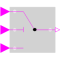
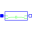

LogicalSwitchLogical Switch |

|
Information
This information is part of the Modelica Standard Library maintained by the Modelica Association.
The LogicalSwitch switches, depending on the Boolean u2 connector (the middle connector), between the two possible input signals u1 (upper connector) and u3 (lower connector).
If u2 is true, connector y is set equal to u1, else it is set equal to u3.
Connectors (4)
| u1 |
Type: BooleanInput Description: Connector of first Boolean input signal |
|
|---|---|---|
| u2 |
Type: BooleanInput Description: Connector of second Boolean input signal |
|
| u3 |
Type: BooleanInput Description: Connector of third Boolean input signal |
|
| y |
Type: BooleanOutput Description: Connector of Boolean output signal |
Used in Components (2)
|
Modelica.Clocked.ClockSignals.Clocks.Logical Logical clock combining arbitrary many input clock signals according to a replaceable logical combinator |
|
|  |
Modelica.Electrical.Analog.Examples.Utilities Switched capacitor which can represent a positive or negative resistance |